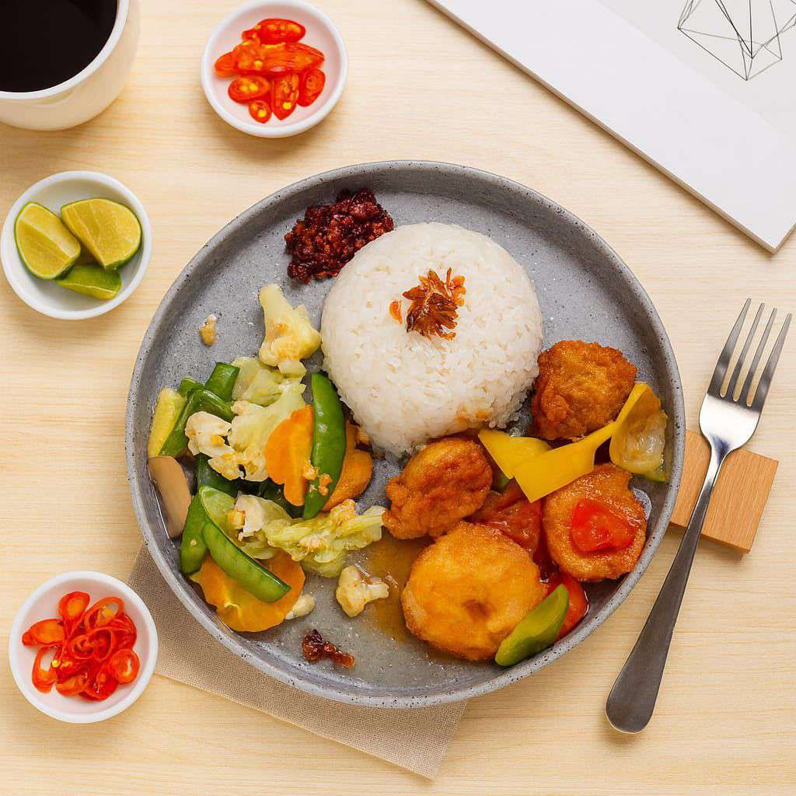

Cerita kami
Bukan sekadar tempat singgah
Coffee J tumbuh jadi tempat orang Palembang menghabiskan waktu, bukan cuma membeli kopi. Rasa tradisional yang ditata ulang, dapur yang menyajikan masakan Indonesia dan Asia, dan ruang yang sengaja dibuat betah — dari sarapan pagi sampai musik terakhir malam itu.
Lihat menu lengkap